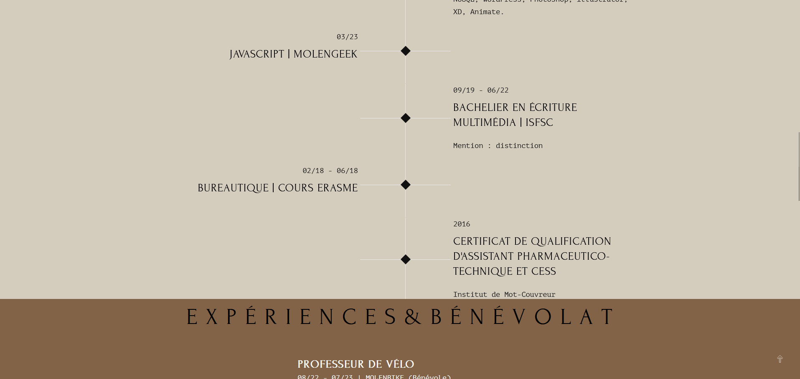
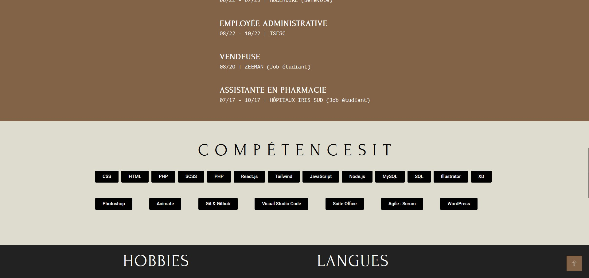
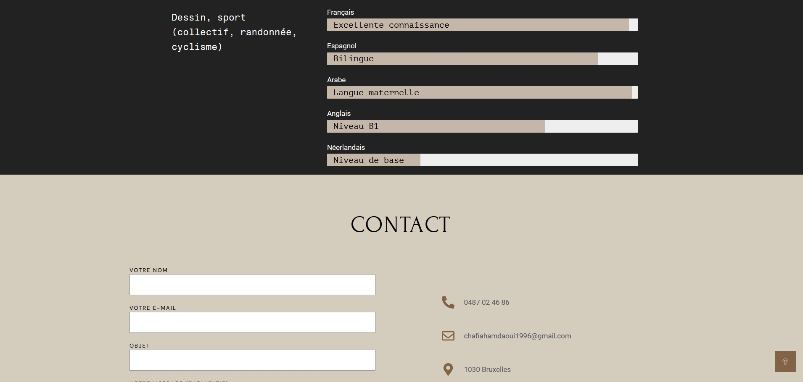
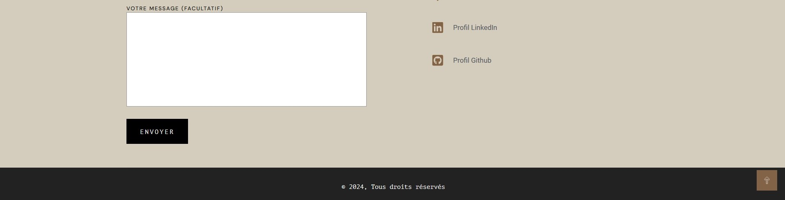
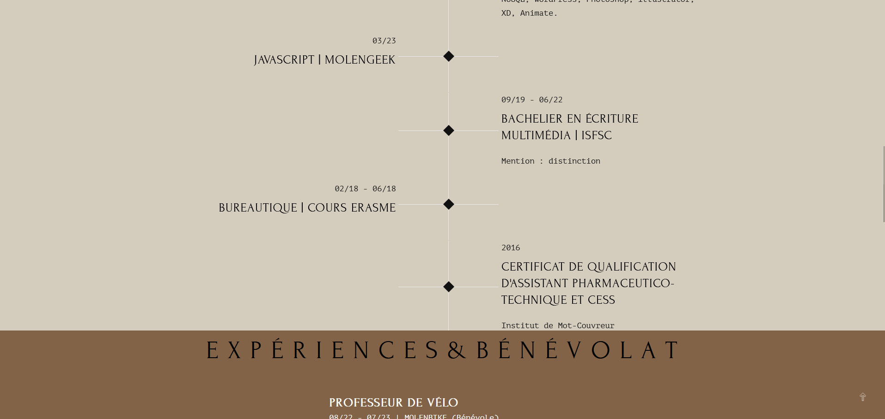
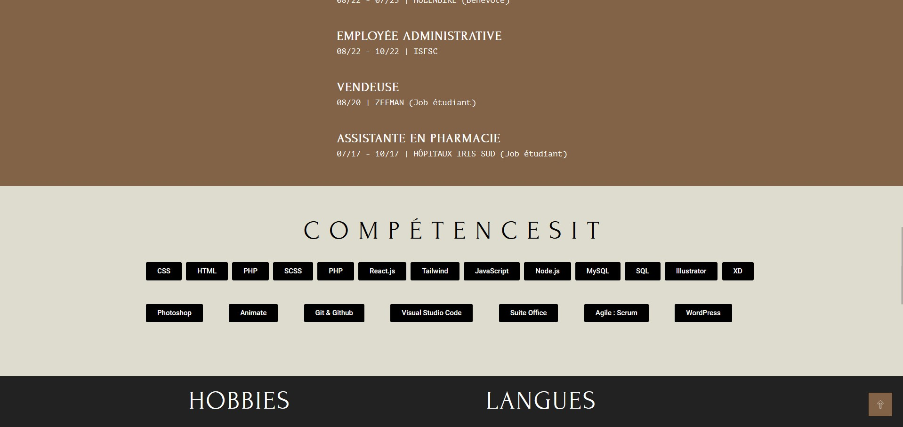
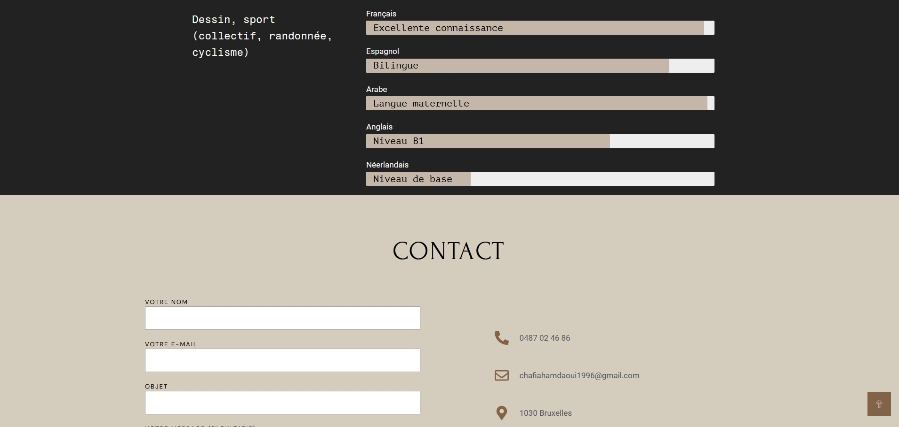
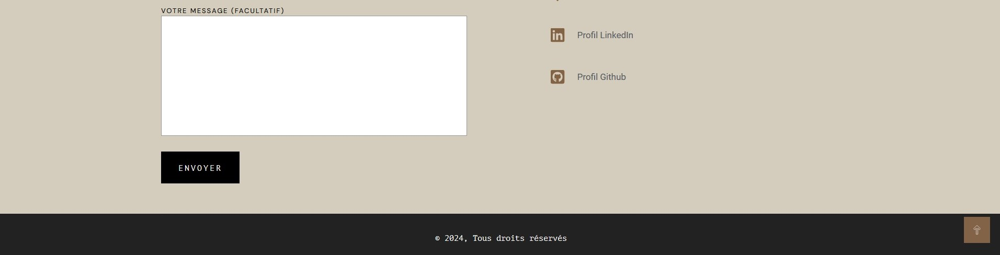

WordPress
J'ai entrepris la création d'un site web one page dans le but de perfectionner mes compétences avec WordPress. Ce projet consiste à présenter mon curriculum vitae de manière interactive et convaincante.
 Outils utilisés
Outils utilisés
- WordPress
- Plugins : Elementor, Contact Form 7, Qi Addons For Elementor, Qode Essential Addons
- Thème : Qi
 Les tâches
Les tâches
J'ai entrepris la création de mon CV sur WordPress en suivant les étapes suivantes : Installation et configuration de WordPress, y compris l'installation du thème et des extensions nécessaires. Ensuite, j'ai procédé à la création de mon site web en utilisant un thème adapté à mes besoins, et j'ai personnalisé chaque aspect pour correspondre à mon style et à mes préférences.
 Compétences développées
Compétences développées
- WordPress
- Installation et configuration de WordPress.
- Sélection et installation d'un thème adapté.
- Personnalisation de l'apparence du site en utilisant les options de personnalisation du thème
- Utilisation des extensions WordPress pour étendre les fonctionnalités du site.
- Utilisation efficace de l'éditeur de pages Elementor pour une mise en page personnalisée.
 






